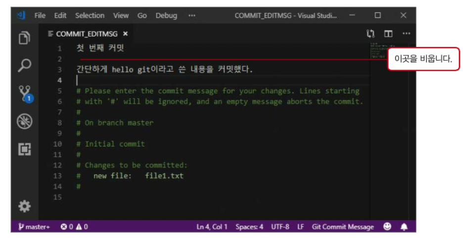

내가 모르던 git(5)
이 글은 팀 개발을 위한 Git, GitHub 시작하기 를 읽고 제가 모르는 부분을 정리한 문서입니다.
git config : 옵션 확인
Git의 옵션에는 지역 옵션 과 전역 옵션, 시스템 환경 옵션 의 세 종류가 있습니다.
- 시스템 환경 옵션 : PC 전체 사용자를 위한 옵션
- 전역 옵션 : 현재 사용자를 위한 옵션
- 지역 옵션 : 현재 Git 저장소에서만 유효한 옵션
우선 순위는 지역 > 전역 > 시스템 옵션 순입니다.
기본명령어
- git add 파일1 파일2 … : 파일들을 스테이지에 추가
- git add . : 모든 파일 스테이지에 추가
- git commit -a : add 명령을 생략하고 바로 커밋, 단 untracked인 파일은 커밋되지 않음
- git push [-u] [원격저장소별명] [브랜치이름] : 현재 브랜치에서 새로 생성한 커밋들을 원격저장소에 업로드 합니다. -u 옵션으로 브랜치의 업스트림을 등록할 수 있습니다. 한 번 등록한 후에는 git push만 입력해도 됩니다.
- git fetch [원격저장소별명] [브랜치이름] : 원격저장소의 브랜치와 커밋들을 로컬 저장소와 동기화 합니다. 옵션을 생략하면 모든 원격저장소에서 모든 브랜치를 가져옵니다.
- git merge 브랜치이름 : 지정한 브랜치의 커밋들을 현재 브랜치 및 워킹트리에 반영합니다.
reset 명령으로 스테이지 취소하기
git rm --cached <file> ... 명령으로 스테이지에서 내릴 수 있습니다. 허나 이 명령보다 git reset 을 더 많이 사용합니다.
git reset [파일명] ...: 특정 옵션을 주지 않으면 mixed reset이기 때문에 스테이지 영역에 있는 파일들을 스테이지에서 내립니다. 워킹트리의 내용은 변경되지 않습니다.- 워킹 트리 : 작업이 일어나는 곳
커밋 메세지 요령
커밋 제목과 본문 사이에 한 줄을 띄우는것이 관습입니다.

또한 커밋 메세지를 쓸 때는 다음과 같이 적어주는 것이 좋습니다.
- 제목과 본문을 빈 줄로 분리한다
- 제목은 50자 이내로 쓴다.
- 제목을 영어로 쓸 경우 첫 글자는 대문자로 쓴다.
- 제목에는 마침표를 넣지 않는다.
- 제목을 영어로 쓸 경우 동사원형(현재형)으로 시작한다.
- 본문을 72자 단위로 줄바꿈한다.
- 어떻게 보다 무엇과 왜를 설명한다.
Upstream : 원격저장소의 브랜치
git push origin master 를 매번 쓰는 것은 귀찮으니 git push 명령으로만 push되게 해봅시다.
git push 를 쓰려고 하면은 우선 로컬 저장소 브랜치의 담당 원격 브랜치인 upstream branch 를 지정해 줘야합니다.
지정하기 위해서는 첫 push를 할 때, 다음과 같은 명령어를 사용하면됩니다.
1
git push --set-upstream [원격저장소별명] [원격브랜치이름]
이 때, —set-upstream은 단축옵션인 -u로 줄 수 있습니다.